Distributions
Introduction
Commonly encountered distributions are built into BUGS, as described on this page. Further distributions are included in GeoBUGS and ReliaBUGS: see the Spatial distributions, Temporal distributions and Reliability distributions pages for details of these.If a distribution is not built into BUGS, distributions specified by a log-likelihood can also be used: see Generic sampling distributions for details.
Binomial
The Binomial distribution is defined by the pmf
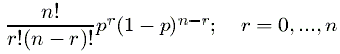
In the BUGS language it is used as
r ~ dbin(p, n)Binomial
The Binomial distribution is defined by the pmf
![[distributions2]](distributions2.bmp)
In the BUGS language it is used as
r ~ dbin(p, n)Categorical
The Categorical distribution is defined by the pmf
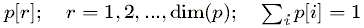
In the BUGS language it is used as
r ~ dcat(p[])Negative Binomial
The Negative Binomial distribution is defined by the pmf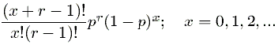
In the BUGS language it is used as
x ~ dnegbin(p, r)Poisson
The Poisson distribution is defined by the pmfIn the BUGS language it is used as
r ~ dpois(lambda)Non-central hypergeometric
The Non-central hypergeometic distribution is defined by the pmfIn the BUGS language it is used as
x ~ dhyper(n, m, N, psi)Beta
The Beta distribution is defined by the pdf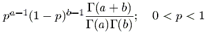
In the BUGS language it is used as
p ~ dbeta(a, b)Chi-squared
The Chi-squared distribution is defined by the pdfIn the BUGS language it is used as
x ~ dchisqr(k)Double Exponential
The Double Exponential distribution is defined by the pdfIn the BUGS language it is used as
x ~ ddexp(mu, tau)Exponential
The Exponential distribution is defined by the pdf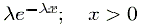
In the BUGS language it is used as
x ~ dexp(lambda)Flat
The improper Flat distribution has a constant value for all x. It is not a proper distribution.In the BUGS language it is used as
x ~ dflat()Gamma
The Gamma distribution is defined by the pdfIn the BUGS language it is used as
x ~ dgamma(r, mu)Generalized extreme value
The Generlized extreme value distribution is defined by the pdfIn the BUGS language it is used as
x ~ dgev(mu, sigma, eta)Generalized F
The Generalized F distribution is defined by the pdfIt reduces to the standard F for mu=0, tau=1. In the BUGS language it is used as
x ~ df(n, m, mu, tau)Generalized Gamma
The Generalized Gamma distribution is defined by the pdf![[distributions14]](distributions14.bmp)
In the BUGS language it is used as
x ~ dggamma(r, mu, beta)Generalized Pareto
The Generalized Pareto distribution is defined by the pdf![[distributions15]](distributions15.bmp)
In the BUGS language it is used as
x ~ dgpar(mu, sigma, eta)Generic log-likelihood distribution
The generic log-likelihood distribution is defined by the pdf exp(lambda). It allows generic log-likelihoods to be used in BUGS. See Generic sampling distributions for details. Note it does not depend on x.In the BUGS language it is used as
x ~ dloglik(lambda)Log-normal
The Log-normal distribution is defined by the pdfIn the BUGS language it is used as
x ~ dlnorm(mu, tau)Logistic
The Logistic distribution is defined by the pdfIn the BUGS language it is used as
x ~ dlogis(mu, tau)Normal
The Normal distribution is defined by the pdf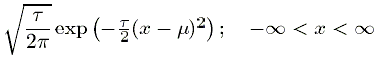
In the BUGS language it is used as
x ~ dnorm(mu, tau)Pareto
The Pareto distribution is defined by the pdf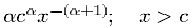
In the BUGS language it is used as
x ~ dpar(alpha, c)Student-t
The Student-t distribution is defined by the pdfIn the BUGS language it is used as
x ~ dt(mu, tau, k)Uniform
The Uniform distribution is defined by the pdf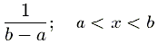
In the BUGS language it is used as
x ~ dunif(a, b)Weibull
The Weibull distribution is defined by the pdfIn the BUGS language it is used as
x ~ dweib(v, lambda)Multinomial
The Multinomial distribution is defined by the pmf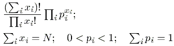
In the BUGS language it is used as
x[] ~ dmulti(p[], N)Dirichlet
The Dirichlet distribution is defined by the pdf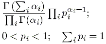
In the BUGS language it is used as
p[] ~ ddirich(alpha[])It may also be spelt
ddirch as in WinBUGS.Multivariate normal
The Multivariate Normal distribution is defined by the pdfIn the BUGS language it is used as
x[] ~ dmnorm(mu[], T[,])Multivariate Student-t
The Multivariate Student-t distribution is defined by the pdfIn the BUGS language it is used as
x[] ~ dmt(mu[], T[,], k)Wishart
The Wishart distribution is defined by the pdf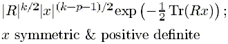
In the BUGS language it is used as
x[,] ~ dwish(R[,], k)